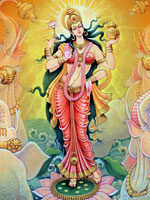

Лакшмі або Шрі ("добрий знак", "щастя", "краса"), в індійській міфології асоціюється з багатьма богинями і найбільш широко відома як прекрасна дружина великого бога Вішну, втілення його творчої енергії. Богиню багатства, щасливої долі та краси зображували у вигляді красуні, що сидить на квітці лотоса, символі материнства, безсмертя і духовної чистоти.
Під час свята світла Дівалі і нині запалюють тисячі ліхтарів і влаштовують феєрверки на честь богині. Люди грають і веселяться, а богиня, вірять багато, ходить від хати до хати в пошуках місця для відпочинку, даруючи багатство тим осель, які яскраво освітлені.
Всі хотіли мати Лакшмі, але вона негайно покидала тих, хто садив її собі на голову, а саме так і вчинили демони, коли їм вдалося захопити її. Відповідно до одного переказами, одного разу богиня виявилася настільки близько від Індри, що з нього пішов рясний дощ і хліба пишно заколосились.
Лакшмі згадується в знаменитому міфі про пахтанье богами океану, який поступово перетворився в молоко, і з нього з'явилися не тільки Амріта, але і "чотирнадцять чудес", в тому числі сама богиня, що сидить на квітці лотоса. Небесні музиканти і мудреці оспівували Лакшмі, річки молили її викупатися в їх водах, молочні моря пропонували вінець з квітів безсмертя, а священні слони, які тримають світ на своїх спинах, поливали її водою зі священної для всіх індійців річки Ганг.